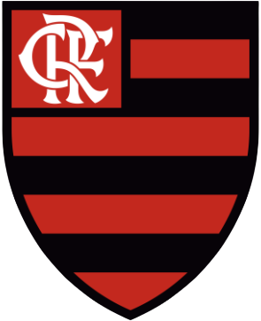

Em 1º de setembro de 1910, no bairro do Bom Retiro em São Paulo, um grupo de operários formado por Anselmo Corrêa, Antônio Pereira, Carlos Silva, Joaquim Ambrósio, Raphael Perrone, além de outros quatro integrantes, fundaram o então Sport Club Corinthians Paulista. O nome foi inspirado na equipe inglesa Corinthian-Casuals, que fazia excursão no Brasil naquele período. O primeiro presidente do clube foi o alfaiate Miguel Battaglia, que já no primeiro momento, afirmou que o Corinthians seria então o “time do povo”. Ele então declarou: “O Corinthians vai ser o time do povo e o povo é quem vai fazer o time”. Um terreno alugado na Rua José Paulino foi acampado e é considerado o primeiro estádio do clube, onde foi realizado o primeiro treino no dia 14 de setembro. Já com uma plateia entusiasmada, Miguel então declarou: “Este time veio pra ficar”.
O Flamengo foi fundado em 17 de novembro de 1895 para as disputas de remo. A entrada da equipe no futebol aconteceu em 1912. Atualmente, o time rubro-negro é o maior vencedor da história do Campeonato Carioca, com 31 títulos. Segundo diversas pesquisas, é o clube com o maior número de torcedores do País.
Corinthians x Fl amengo
Utilize o aplicativo GolMaster.com para logar sem senha, usando apenas o leitor de QR code.